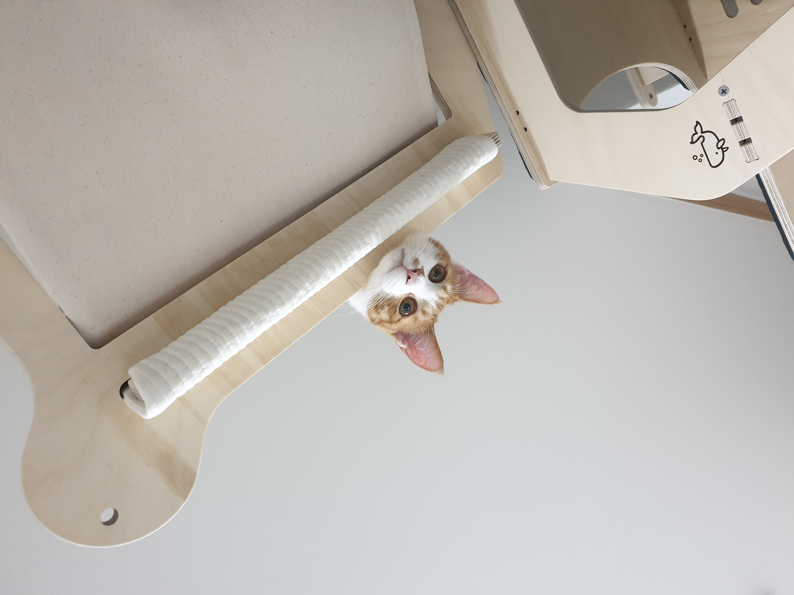

제리

안녕하세요 저는 제리
예요
저는 관악구 신림동에서 태어났어요.
제가 좋아하는 것을 알려드릴게요!
- 집사가 밥 챙겨주는 시간
- 맛있는 간식
- 집사의 무릎 위
저의 특징을 알려드릴게요
- 저는
긴 꼬리와 왕발
을 가지고 있어요. - 저는
손 개인기
가 가능해요. 골골송
을 잘 불러요.
삐삐

안녕하세요 저는 삐삐
예요.
저는 동작구 흑석동에서 태어났어요.
제가 좋아하는 것을 알려드릴게요!
- 저는 집사가 빗질해주는 것을 좋아해요.
- 간식은 북어트릿을 가장 좋아해요.
- 따뜻한 숨숨집을 아주 좋아해요.
저의 특징을 알려드릴게요
- 저는
울음 소리가 귀여워요
. 몸집이 작은 편
이에요.- 집사가
부르면 달려와요
.